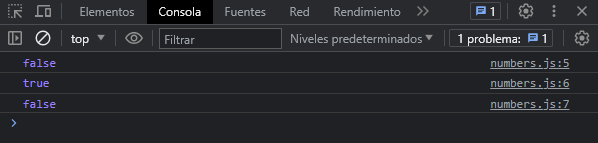
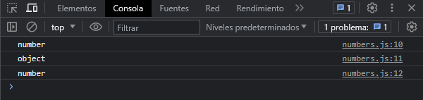

El constructor Number contiene constantes y metodos para trabajar con numeros. Valores de otro tipo pueden ser convertidos a numeros usando la funcion Number()
Crear valores numericos
Veamos como podemos crear valores numericos en javascript:
let edad = 24
let edadII = new Number(23)
let edadIII = Number(50)
Podemos definir valores numericos directamente a una variable con el valor numerico, o usando el contructor Number, o la funcion Number. Al definir con el constructor Number, este nos devuelve un objeto, ya que ha sido creado con el prototype del constructor Number. A diferencia de las otras dos formas, no son instancias del objeto Number, por lo tanto no fueron creadas con el prototype del constructor Number.
Veamos que nos devuelve al usar la instruccion - instanceof - para verificar si tienen el prototype Number.
console.log(edad instanceof Number)
console.log(edadII instanceof Number)
console.log(edadIII instanceof Number)
Nos muestra en consola lo siguiente:

Nos devuelve true el unico valor que definimos con el constructor Number - edadII - los otros nos devuelve falso porque no han sido creado por el constructor, sin embargo, son number, la unica diferencia es que no tienen la propiedad - prototype: Number -.
Ahora veamos que nos devuelve cuando usamos la instruccion - typeof -.
console.log(typeof edad)
console.log(typeof edadII)
console.log(typeof edadIII)
Nos muestra lo siguiente en consola:
Al igual que el ejemplo anterior el valor - edadII - nos devuelve un - object - osea que el tipo de dato es un objeto en si, se debe a que al definirlo con el constructor Number es un objeto el que estamos creando. Sigue siendo un Number ya que ha sido creado con el constructor, lo diferente es que tiene en sus propidades el - prototype: Number -. Los demas valores devuelven como resultado - number -, su tipo de dato.